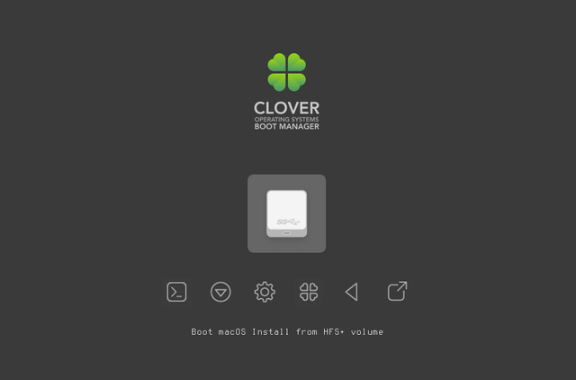

The Ultimate Gateway to UEFI - Clover
Published: 2021-09-14 09:52Last updated: 2021-09-14 09:52

WARNING! Before you make any modifications to your system installation make sure you know what you're doing and have backed up your important data in case of failure. I am not responsible for damages you do to a computer or data using the instructions below.
The bootloader - to most users it's one of the invisible components of a computer system. And yet it's one of the most crucial to actually being able to use one.
But what is a bootloader? A bootloader is a piece of software that allows you to launch an operating system of your choosing. If you only run one operating system the optimal solution would be to make this one component completely invisible, thus allow the computer system to launch the only operating system present on the disk with the most typical and optimal parameters without displaying a menu to pick one since it will be mostly redundant.
That's why you won't even see Windows' bootloader in most cases even though it's there at every system startup. After all, there's typically only one operating system present and all a typical user needs from Windows is browse the web, see their e-mails or play their favorite video game.
If you install a Linux operating system your installer will typically prompt you to install GRUB. Why is that? It's because GRUB can pride itself in diverse compatibility with Windows and Linux including their various filesystems. It also comes with a simple installer if you were to install it from command line.
# grub-install --target=x86_64-efi --efi-directory=/boot/efi --bootloader-id="GRUB" /dev/sdX
It takes even fewer options if you install it on a legacy BIOS computer system.
# grub-install --target=i386-pc /dev/sdX
You might need to generate a configuration file afterwards, but it's small detail.
What if I told you there was an even more ambitious bootloader out there? One that not only supports most typical Windows/Linux setups (and most importantly, MacOS!) but also allows you to run UEFI operating systems on legacy BIOS computer systems? It exists and its name is Clover.
Clover is actually popular in the Hackintosh community for allowing you to run MacOS on computer systems that were not originally intended to accomodate MacOS. That, however, is not the focus of this article.
Going back on track... If you don't know, UEFI and traditional BIOS are two technologies used to boot an operating system. Traditional BIOS will in normal circumstances use DOS partition tables only, which are the older method to partition disks. UEFI additionally allows you to use GPT (GUID Partition Table) disks, which allow up to 128 partitions (as opposed to DOS partition table's 4 partitions) and up to 8 ZiB big partitions (as opposed to 2TB). If your computer came with Windows 8 or later it most likely runs on UEFI.
With Clover you can boot into these GPT partition tables on systems which don't run UEFI by themselves. That's achieved with Clover's unique bootfiles that you write yourself to the MBR and PBR of the disk and then the partition itself.
In case Clover doesn't do what you need it to do, for instance support your prefered filesystem or support encryption, you can boot an EFI Linux system installer and perform a EFI installation of a capable bootloader, since Clover in itself is a UEFI environment and you can first boot into Clover and then a bootloader of your choosing. If you don't need another bootloader though, my recommendation not just for Clover but UEFI in general is to try creating an EFI entry to boot your kernel and omit that another bootloader altogether.
For a Clover installation you need to pick a set of bootfiles that you will install. You need to make the following selections:
- A phase 1 loader:
boot0aforboot0ssfrom theBootSectorsfolder - A phase 2 loader:
boot1f32orboot1f32altfrom theBootSectorsfolder - An x64 bootloader:
boot6orboot7from theBootloadersfolder
A boot0 file is written to the first 440 bytes of the MBR. It looks for an active partition in the partition table and passes the control over to the PBR of that partition. To use a specific partition we write a boot1 file to its PBR. The PBR then looks for a file named boot on the partition's filesystem itself. That file named boot is actually either the boot6 or boot7 file.
Here's a basic breakdown on the significance of each relevant bootfile[1]:
boot0aflooks for an active partition in the MBR partition table first. If the table is pure GPT then control is transferred over to the EFI partition.boot0sslooks for the first partition with a 0xAF signature.boot1f32is intended for a FAT32 partition. You can use it with an EFI system partition.boot1f32altis a variant ofboot1f32that pauses for 2 seconds to allow the user to pick a bootloader by typing its number. By defaultboot6is used.boot6is the standard 64-bit bootloader.boot7is supplied with a BiosBlockIO driver, if that's what's necessary for the computer system.
For the instructions below I chose boot0af, boot1f32 and boot6.
Before starting I recommend creating a new directory and performing all work in it. Create a work directory and change to it.
$ mkdir Clover-work $ cd Clover-work
First things first, we need to make sure we have an EFI partition. if you don't have one, create it, mount it and create the EFI folder. From this moment on I'll assume the EFI partition is mounted under /boot/efi.
Then we download the Clover package. As of time of writing, that is September 13th 2021, the latest version of Clover is 5139.
$ curl -LO https://github.com/CloverHackyColor/CloverBootloader/releases/download/5139/CloverV2-5139.zip
Then we unzip it...
$ unzip CloverV2-????.zip
Next step is to copy the Clover EFI directory over to the EFI partition...
# cp -r CloverV2/EFI/CLOVER /boot/efi/EFI/
...and (having made sure you won't overwrite anything) copy the BOOT directory... If you're installing Clover on a newly created partition table you have nothing to worry about. But if you write over the previously existing EFI boot file you might have trouble booting your current UEFI operating system. If the file already exists you might need to reinstall the system that placed the original file after the Clover install process.
# cp -r CloverV2/EFI/BOOT /boot/efi/EFI/
If you're going to use the disk on the UEFI system you're currently using you might want to add a new EFI entry using efibootmgr. The -d and -p switches specify the target disk and partition respectively, so please adjust the command to your own EFI partition.
# efibootmgr -c -d /dev/sda -p 1 -L "Clover Bootloader" -l '\EFI\CLOVER\CLOVERX64.efi
With this, you're all set to use the Clover bootloader on your UEFI system. However, we want to also be able to boot the disk from a legacy BIOS system and we will enable this capability with the next few steps.
From this point on I'm assuming the EFI system partition is /dev/sda1.
We copy the boot6 file to the root of the EFI partition...
# cp CloverV2/Bootloaders/x64/boot6 /boot/efi/boot
...and unmount it, because we will be writing to its boot records...
# umount /dev/sda1
We'll copy the Clover MBR file to the working directory...
$ cp CloverV2/BootSectors/boot0af ./
Write the MBR, the PBR and the backup PBR of your partition table and the partition itself where applicable, to files. We read the first sector of the partition table for MBR, the first sector of the EFI partition for PBR and the seventh sector of the EFI partition for the backup PBR.
# dd if=/dev/sda bs=512 count=1 >origMBR # dd if=/dev/sda1 bs=512 count=1 >origPBR1 # dd if=/dev/sda1 skip=6 bs=512 count=1 >origPBR2
Next, we'll copy files upon which we'll base our new bootsectors.
$ cp origMBR newMBR $ cp CloverV2/BootSectors/boot1f32 newPBR1 $ cp newPBR1 newPBR2
Now we'll create our MBR image...
$ dd if=boot0af of=newMBR bs=440 count=1 conv=notrunc
...the PBR image...
$ dd if=origPBR1 of=newPBR1 skip=3 seek=3 bs=1 count=87 conv=notrunc
...and the backup PBR image...
$ dd if=origPBR2 of=newPBR2 skip=3 seek=3 bs=1 count=87 conv=notrunc
Finally, we'll write the images to the boot sectors...
# dd if=newMBR of=/dev/sda bs=512 count=1 conv=nocreat,notrunc # dd if=newPBR1 of=/dev/sda1 bs=512 count=1 conv=nocreat,notrunc # dd if=newPBR2 of=/dev/sda1 seek=6 bs=512 count=1 conv=nocreat,notrunc
Reboot your legacy BIOS device and you should see it boot right into the Clover bootloader. If you're using a UEFI computer, open the boot menu and pick the Clover bootloader entry or configure it to use the Clover EFI entry by default. From here on in you can boot an x86_64 operating system in UEFI mode. Press F3 to show hidden entries such as USB sticks in UEFI mode possibly. In case of Windows 10 you might need to navigate to the UEFI file through the EFI shell and execute it.
You might need to look into the config.plist file to have your new bootloader work the way you want, for instance to allow booting various types of systems, such as legacy systems.
Congratulations! You have successfully installed Clover and used it to boot an UEFI operating system on a legacy BIOS computer.
Sources:
- Translated Russian Clover guide, https://drovosek01.github.io/CloverHackyColor-WebVersion/english/from%20Word/Clover_Of_Khaki_Color_eng_5129.htm
- Clover install script by m13253, https://github.com/m13253/clover-linux-installer/blob/master/install.sh.